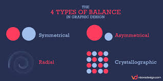
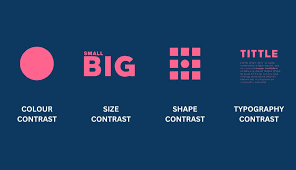
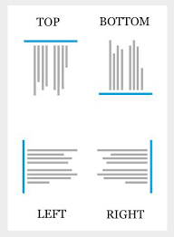
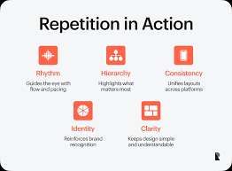
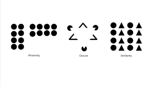

Graphic design is built on a set of guiding principles that ensure clarity, balance, and effective communication. These principles transform creative ideas into purposeful visual solutions and help designers create work that is both aesthetically pleasing and functional.
Balance in graphic design means arranging elements so the overall composition feels stable, harmonious, and visually comfortable to the viewer. It prevents designs from looking lopsided or chaotic, guiding the eye naturally across the page.

Contrast in graphic design is all about difference — it’s what makes certain elements stand out and grab attention. Without contrast, everything blends together and the viewer doesn’t know where to look first.

Alignment in graphic design is the principle that ensures elements are visually connected, creating order and consistency across a layout. It’s about lining things up so the viewer feels guided rather than lost.

Repetition in graphic design is the principle of reusing certain elements like: colors, shapes, fonts, or patterns to create consistency and unity across a design. It’s what ties everything together and makes a project feel cohesive rather than random.

Proximity in graphic design is the principle of grouping related elements together so their connection is clear to the viewer. It’s less about how close things are physically, and more about how their placement signals relationships.
